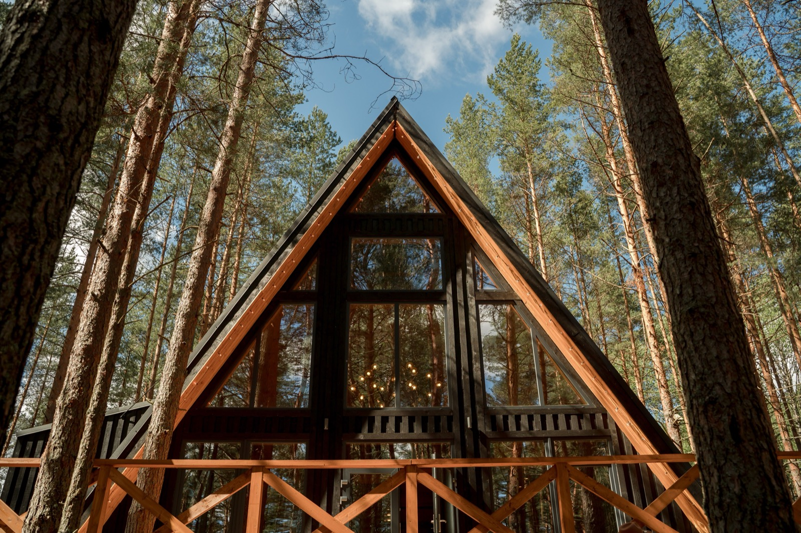

A-Frame Homes
The iconic steep-roofed triangle, a roof that's also the walls, shedding rain and snow effortlessly. Simple, cheap to frame, and photogenic. The trade-offs are cramped upstairs and wasted wall space.

An A-frame is a house shaped like its name: a steep, triangular roof that runs all the way to the ground, doing double duty as both roof and walls. That simple geometry is the whole idea, a self-bracing frame that's quick and cheap to build, with a roofline that sheds rain and snow effortlessly. It's a cabin classic having a design revival, and its rain-shedding form has real appeal in a wet climate.
At a glance
- The roof is the wall. That is the whole idea, and it is also the whole problem: at a 45° pitch roughly a third of your ground floor has no standing headroom.
- Compare on usable area, never footprint. A 1,000 sq ft A-frame gives you 600–650 sq ft you can stand up in.
- Finished cost runs $150–300 per sq ft, which is $230–460 per usable sq ft. Shell kits start around $30,000.
- Built for snow country. The steep pitch sheds snow and the compact form is cheap to heat.
- In the tropics it needs care: glass gables collect sun and the apex traps heat. Ridge ventilation is not optional.
- They earn their keep as rentals, because the shape itself is the marketing.
How the triangle works
Pairs of steeply-pitched rafters meet at a ridge to form a series of triangular frames, tied across the bottom and sheathed, the sloping sides are the roof and the walls in one plane. Big glass gable ends (front and back) let in light, since the sloped sides have few or no windows. It's structurally efficient and self-bracing, which is why A-frames go up fast and handle wind and heavy roof loads well.
The numbers
The frame is economical, fewer, simpler structural members and a small footprint, so a basic A-frame shell is cheap to build, roughly $$. The cost creeps back up in the big glass gables and the finish, and you're paying to build roof area you can't fully use as living space. Overall it's a mid-value build: ~$1,000–2,000/m² of usable floor depending on finish. (Approximate.)
The floor-area problem nobody mentions
This is the thing to understand before you fall in love with the shape. In an A-frame the roof is the wall, and where the roof meets the floor there is no headroom at all. You pay for the footprint and you cannot use all of it.
| Roof pitch | Usable ground-floor area | Feel |
|---|---|---|
| 45° | ~60–65% of footprint | Classic A-frame, dramatic, tight at the edges |
| 55° | ~70–75% | Steeper, more usable, less iconic |
| 60°+ | ~78–82% | Approaching a conventional wall |
| Conventional walls | ~100% | The baseline you are comparing against |
Work it through on a real number. A 1,000 sq ft A-frame footprint at a 45° pitch gives roughly 600 to 650 sq ft of space you can stand up in. The loft recovers some of it, which is why almost every A-frame has one, but the loft is under the apex and its own edges are unusable for the same reason.
The practical consequence: compare A-frames on usable area, never on footprint. A quoted price per square foot that uses the footprint will understate your real cost per usable square foot by something like 40%.
What an A-frame costs
| Route | Cost | What you get |
|---|---|---|
| Shell kit only | $30,000–90,000 | Frame, roof structure, sheathing. No foundation, no services, no finishes. |
| Kit, delivered and erected | $60,000–150,000 | Weathertight shell on your foundation |
| Finished, built by a contractor | $150–300 / sq ft | Turnkey, comparable to conventional construction |
| Per usable sq ft at 45° | $230–460 | The number that lets you compare fairly |
Where an A-frame genuinely saves money: it has no conventional walls on two sides, the framing is repetitive and fast, and the roof and wall are one assembly, so you buy one weather envelope instead of two.
Where it gives the money back: the gable ends are mostly glass, and large glazed gables are one of the most expensive assemblies in residential building. The steep roof needs more surface area of roofing material than a conventional roof over the same footprint. And custom angles mean more cutting waste and more skilled labour than a rectangular box.
Insulation, heat and the tropical question
Because the roof and wall are the same surface, an A-frame has an unusually large envelope relative to its interior volume. Everything that happens thermally happens through that surface.
- In cold climates this works well. The steep pitch sheds snow rather than accumulating it, the compact form is efficient to heat, and heat rising into the apex is easy to move back down with a fan. This is why the form belongs to ski country.
- In the tropics it fights you. A south or west-facing glass gable is a solar collector, and the apex traps hot air exactly where you cannot easily reach it. Stack ventilation at the ridge is not optional, it is the difference between a pleasant house and an unusable one.
- Rain performance is excellent in any climate. A 45° pitch sheds tropical downpours faster than almost any other roof form, and there are few horizontal surfaces for water to sit on.
The honest verdict for a hot climate: an A-frame can work beautifully, but only if the gable glazing faces away from the afternoon sun, the ridge is vented, and the envelope carries continuous insulation. Get those three wrong and you have built a greenhouse. This is the opposite of the calculation in ICF or block construction, where thermal mass does much of the work for you.
Why people build them anyway
Given the floor-area penalty and the thermal difficulty, A-frames remain popular for reasons that are real but not structural.
- They photograph extremely well, which has made them a fixture of the short-term rental market. An A-frame cabin often out-earns a conventional cabin of the same usable size, because the shape itself is the marketing.
- They are fast. A shell kit can be weathertight in days rather than weeks.
- They suit small footprints. The form makes 600 to 900 usable square feet feel generous, because the ceiling volume is enormous.
- They are structurally simple. The triangle is inherently rigid, which is why the form handles wind and snow load well with relatively little engineering.
If the goal is maximum house per dollar, an A-frame is the wrong answer. If the goal is a small, striking, fast building on a difficult site, or a rental that stands out in a crowded listing page, it is a genuinely good one.
What you gain and give up
| Factor | Rating | Notes |
|---|---|---|
| Cost | 🟢 | Simple, economical frame; small footprint |
| Water shedding | 🟢 | Steep roof sheds rain brilliantly, great for wet tropics |
| Build speed | 🟢 | Simple, self-bracing, fast |
| Seismic/wind | 🟢 | Low, braced triangle handles wind well |
| Usable space | 🔴 | Sloped walls waste floor area; cramped upstairs |
| Heat/climate fit | 🟡 | Upper level traps heat; needs venting (a ridge vent helps) |
| Aesthetics | 🟢 | Iconic, photogenic, light-filled gables |
| Permitting/finance | 🟢 | Simple conventional structure |
How hard is it to frame?
A-frames are among the simplest homes to frame. The repeating triangle is forgiving and self-bracing, which is why they're a perennial DIY and cabin favorite. In the tropics the form has a genuine advantage: that steep roof sheds torrential rain instantly and never ponds water, and paired with a metal roof it's a very weather-resilient shape. The real downsides are livability, not buildability. The sloped walls eat usable floor space, furniture is awkward against them, and heat rises and collects in the loft, so you want good ridge ventilation and shading. As a striking cabin, rental, or vacation home in a rainy region it's a smart, characterful choice. As a full family home, the wasted space is the thing to weigh.
Compare on usable area, not footprint.
The A-frame is the one house shape where the headline square footage is misleading by design, since at a 45 degree pitch roughly a third of your ground floor has no standing headroom. It is still a great building for the right site and the right brief. SORA builds across Panama and Costa Rica and will price your design on usable area, so the comparison against a conventional build is an honest one.
See real 2026 build costs →Frequently asked questions
Are A-frame houses cheap to build?
The frame is economical, a simple, self-bracing triangle with a small footprint and few structural members, so the basic shell is cheap. Costs rise with the large glass gable ends and interior finish, and you do pay to build roof area that isn't fully usable as living space.
Are A-frames good for rainy or tropical climates?
The steep roof is a real advantage in heavy rain, it sheds water instantly and never ponds, and paired with a metal roof it's very weather-resilient. The main tropical caveat is heat rising into the loft, which good ridge ventilation and shading address.
What's the biggest downside of an A-frame?
Usable space. Because the walls slope inward, floor area near the edges is hard to use and furniture placement is awkward, especially on the upper level. You get a striking, light-filled home, but less practical square footage than a conventional house of the same size.
Sources & verification
Figures in this guide were checked against primary and authoritative sources on 27 July 2026. Immigration, tax, and cost figures change — always confirm the current rules with the official body or a licensed professional before acting.
- Bob Vila — A-frame house pros, cons & cost
- Yanko Design — modern A-frame design revival